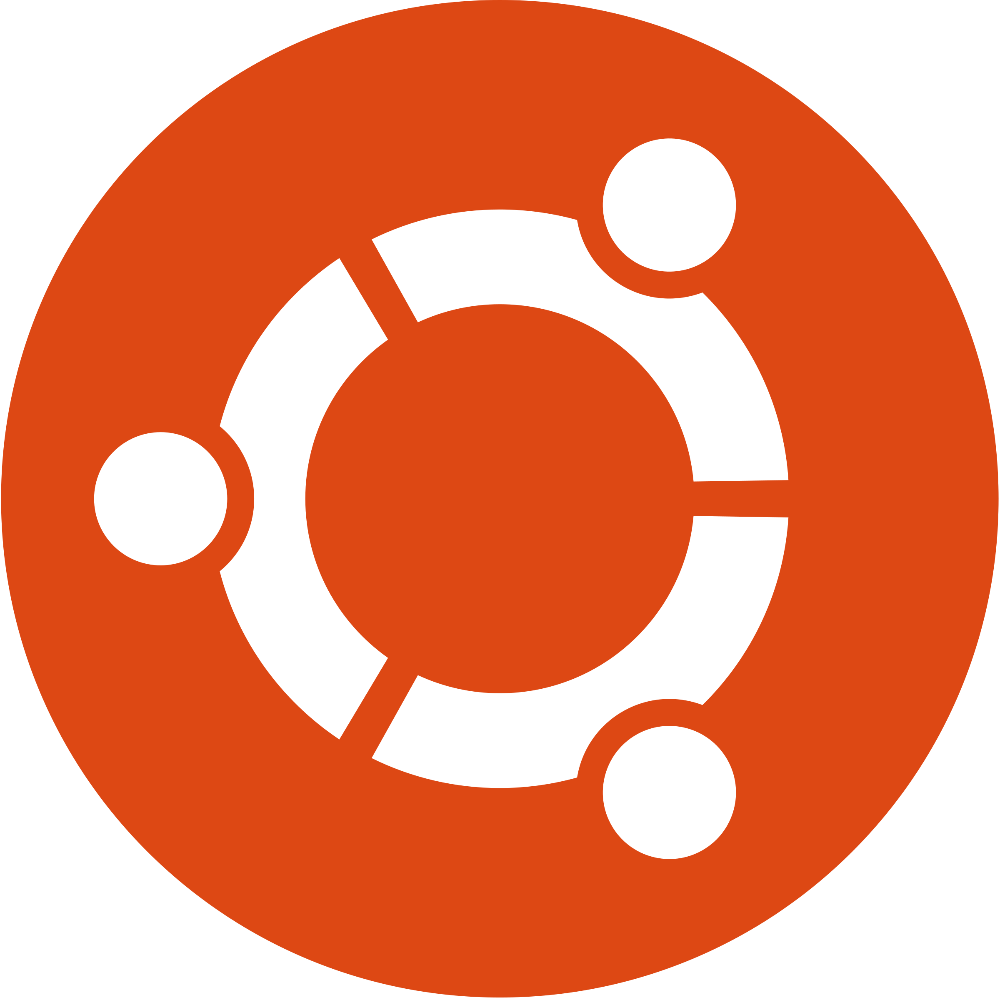

Three Common Operating Systems
- MS-Windows
- Ubuntu
- Mac OS
| OS Name | Computer Architecture Supported | Target System Default | Security Threat | Best For | Price | Website |
|---|---|---|---|---|---|---|
| Windows | X86, x86-64, |
Workstation, Personal Computer | Huge | Apps, Gaming, Browsing | $119 - $199 | Windows |
| Mac OS | 68k, Power PC |
Workstation, Personal Computer | Negligible | Apple Exclusive Apps | Free | Mac OS |
| Ubuntu | X86, X86-64, Power PC, SPARC, Alpha. |
Desktop/server | Negligible | Open Source Downloading, APPS | Free | Ubuntu |
| Fedora | X86, X86-64, Power PC, SPARC, Alpha. |
Desktop/server | Negligible | Coding, Corporate Use | Free | Fedora |
| FreeBSD | X86, X86-64, PC 98, SPARC, others. |
Server, Workstation, NAS, embedded | Negligible | Networking | Free | FreeBSD |
Best ForApps,Browsing,PersonalUse,Gaming,etc
Price: $119-$199 Pro
Windows is the most popular and familiar operating system on this list. From Windows 95, all the way to the Windows 10, it has been the go-to operating software that is fueling the computing systems worldwide. It is user-friendly, and starts up & resumes operations fast. The latest versions have more built-in security to keep you and your data safe.
Features
Get ready to explore the top operating systems that are used worldwide. The Task View feature lets the users switch between multiple workspaces at once, by displaying all the open Windows. Two separate user interfaces, one for mouse and keyboard, and the ‘Tablet Mode’ designed for touchscreens. Multifactor authentication technology for higher security spanke BIN, PIN, Fingerprint recognition, etc. Automatically compress system files to reduce the storage footprint.Verdict: The Windows software is simply best because of how it has evolved with time. Its
security system is state-of-the-art, its user interface allows convenient usage irrespective of the device
that you are using it on. The only thing that will pinch some is its price.
Website: Microsoft

- Ubuntu
Best ForOpen Source Downloading, Running Apps, Browsers, and Gaming.
Price:
Free
Ubuntu is a Linux based OS that comes with everything that you are looking for in an operating system. It is perfect for organizations, schools, and home use. It is free to download, use, and share and that alone should be worth checking this app out. It is user-friendly, and starts up & resumes operations fast. The latest versions have more built-in security to keep you and your data safe.
Suggested reading =>> Windows Vs Ubuntu- Which is a better OS?
It is backed by Canonical which is a global software company, and now by the leading Ubuntu service
providers.
Features
Ubuntu is an Open Source software, which allows it to be freely downloaded, used and shared by its users. It comes with a built-in firewall and virus protection software, by making it the most secure OS around. You get five years of security patches and updates. Ubuntu is fully translated into 50 different languages. It works and is compatible with all the latest laptops, desktops and touch screen devices.Verdict: Ubuntu is a great option for those with holes for pockets. Its open-source feature
is enticing enough to attract many users. But, it also makes up in quality by providing a robust interface,
and security features that are too hard to pass on.
Website: Ubuntu
Best ForApple-exclusive Apps, Dynamic Desktop, etc.
Price: Free with
Apple Devices.
The Mac OS has been the staple of almost all Apple devices as we can remember. It has evolved with time to include the features that first and foremost define innovation. In recent years, the MAC operating systems have been completely free with the occasional free upgrade by its developers. For Apple users, there is no other option except the MAC OS.
Features
The new dark mode gives your desktop interface a more dramatic look which is easier on the eyes. A dynamic desktop which helps to automatically organize your desktop files by kind, date or tag. Continuity camera that scans or photographs a document nearby your iPhone and automatically appears on your mac. Discover handpicked apps with the MAC app store. New iTunes that allows users to search for songs with few lyrics. Prevent websites from tracking your Mac by making your profile more anonymous online.Verdict: The Windows software is simply best because of how it has evolved with time. Its
security system is state-of-the-art, its user interface allows convenient usage irrespective of the device
that you are using it on. The only thing that will pinch some is its price.
Website: Apple